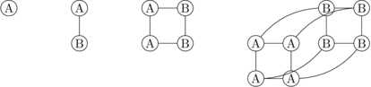
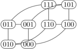

|
Building Blocks
|
This chapter covers recursive definition, including finding closed forms.
Thus far, we have defined objects of variable length using semi-formal definitions involving $\ldots$. For example, we defined the summation $\sum_{i=1}^n \ i$ by $$\sum_{i=1}^n \ i = 1 + 2 + 3 + \ldots + (n-1) + n$$
This method is only ok when the reader can easily see what regular pattern the $\ldots$ is trying to express. When precision is essential, e.g. when the pattern is less obvious, we need to switch to ``recursive definitions.''
Recursive function definitions in mathematics are basically similar to recursive procedures in programming languages. A recursive definition defines an object in terms of smaller objects of the same type. Because this process has to end at some point, we need to include explicit definitions for the smallest objects. So a recursive definition always has two parts:
For example, the summation $\sum_{i=1}^n \ i$ can be defined as:
Both the base case and the recursive formula must be present to have a complete definition. However, it is traditional not to explicitly label these two pieces. You're just expected to figure out for yourself which parts are base case(s) and which is the recursive formula. The input values are normally assumed to be integers.
The true power of recursive definition is revealed when the result for $n$ depends on the results for more than one smaller value, as in the strong induction examples. For example, the famous Fibonacci numbers are defined:
So $F_2 = 1$, $F_3 = 2$, $F_4 = 3$, $F_5 = 5$, $F_6 = 8$, $F_7 = 13$, $F_8 = 21$, $F_9 = 34$. It isn't at all obvious how to express this pattern non-recursively.
Many recursive numerical formulas have a closed form, i.e. an equivalent expression that doesn't involve recursion (or summation or the like). Sometimes you can find the closed form by working out the first few values of the function and then guessing the pattern. More often, you need to use an organized technique. The simplest technique for finding closed forms is called ``unrolling.''
For example, suppose we have a function $T:\mathbb{N} \rightarrow \mathbb{Z}$ defined by \begin{eqnarray*} T(1) &=& 1 \\ T(n) &=& 2T(n-1) + 3, \ \ \ \ \forall n \ge 2 \end{eqnarray*}
The values of this function are $T(1) = 1$, $T(2) = 5$, $T(3) = 13$, $T(4)= 29$, $T(5) = 61$. It isn't so obvious what the pattern is.
The idea behind unrolling is to substitute a recursive definition into itself, so as to re-express $T(n)$ in terms of $T(n-2)$ rather than $T(n-1)$. We keep doing this, expressing $T(n)$ in terms of the value of $T$ for smaller and smaller inputs, until we can see the pattern required to express $T(n)$ in terms of $n$ and $T(0)$. So, for our example function, we would compute: \begin{eqnarray*} T(n) &= & 2T(n-1) + 3 \\ &= & 2(2T(n-2) + 3) + 3 \\ &= & 2(2(2T(n-3) + 3) + 3) + 3 \\ &= & 2^3T(n-3) + 2^2\cdot 3 + 2\cdot 3 + 3 \\ &= & 2^4T(n-4) + 2^3\cdot 3 + 2^2\cdot 3 + 2\cdot 3 + 3 \\ &\ldots & \\ &= & 2^kT(n-k) + 2^{k-1}\cdot 3 + \ldots + 2^2\cdot 3 + 2\cdot 3 + 3 \\ \end{eqnarray*}
The first few lines of this are mechanical substitution. To get to the last line, you have to imagine what the pattern looks like after $k$ substitutions.
We can use summation notation to compactly represent the result of the $k$th unrolling step: \begin{eqnarray*} T(n) &= & 2^kT(n-k) + 2^{k-1}\cdot 3 + \ldots + 2^2\cdot 3 + 2\cdot 3 + 3 \\ &= & 2^kT(n-k) + 3(2^{k-1} + \ldots + 2^2 + 2 + 1) \\ &= & 2^kT(n-k) + 3\sum_{i=0}^{k-1}(2^i) \end{eqnarray*}
Now, we need to determine when the input to $T$ will hit the base case. In our example, the input value is $n-k$ and the base case is for an input of 1. So we hit the base case when $n-k = 1$. i.e. when $k = n-1$. Substituting this value for $k$ back into our equation, and using the fact that $T(1) = 1$, we get \begin{eqnarray*} T(n) &=& 2^kT(n-k) + 3 \sum_{i=0}^{k-1}(2^i) \\ &=& 2^{n-1}T(1) + 3\sum_{i=0}^{n-2}(2^i) \\ &=&2^{n-1} + 3\sum_{k=0}^{n-2}(2^k) \\ &=& 2^{n-1} + 3 (2^{n-1} - 1) =4(2^{n-1}) -3 =2^{n+1} -3 \end{eqnarray*}
So the closed form for this function is $T(n) =2^{n+1} -3$. The unrolling process isn't a formal proof that our closed form is correct. However, we'll see below how to write a formal proof using induction.
Many important algorithms in computer science involve dividing a big problem of (integer) size $n$ into $a$ sub-problems, each of size $n/b$. This general method is called ``divide and conquer.'' Analyzing such algorithms involves recursive definitions that look like: \begin{eqnarray*} S(1) &=& c \\ S(n) &=& aS(\lceil n/b \rceil) + f(n), \ \ \ \ \forall n \ge 2 \end{eqnarray*}
The base case takes some constant amount of work $c$. The term $f(n)$ is the work involved in dividing up the big problem and/or merging together the solutions for the smaller problems. The call to the ceiling function is required to ensure that the input to $S$ is always an integer.
Handling such definitions in full generality is beyond the scope of this class. (See any algorithms text for more details.) So let's consider a particularly important special case: dividing our problem into two half-size problems, where the dividing/merging takes time proportional to the size of the problem. And let's also restrict our input $n$ to be a power of two, so that we don't need to use the ceiling function. We then get a recursive definition that looks like: \begin{eqnarray*} S(1) &=& c \\ S(n) &=& 2S(n/2) + n, \ \ \ \ \forall n \ge 2\ \ \text{($n$ a power of 2)} \end{eqnarray*}
Unrolling this, we get \begin{eqnarray*} S(n) &= & 2S(n/2) + n \\ &= & 2(2S(n/4) + n/2) + n \\ &= & 4S(n/4) + n + n \\ &= & 8S(n/8) + n + n + n \\ &\ldots & \\ &= & 2^iS(\frac{n}{2^i}) + in \end{eqnarray*}
We hit the base case when $\frac{n}{2^i} = 1$ i.e. when $i = \log n$ (i.e. log base 2, which is the normal convention for algorithms applications). Substituting in this value for $i$ and the base case value $S(1) = c$, we get $$S(n) = 2^iS(\frac{n}{2^i}) + in = 2^{\log n}c + n\log n = cn + n\log n$$
So the closed form for $S(n)$ is $cn + n\log n$.
In real applications, our input $n$ might not be a power of 2, so our actual recurrence might look like: \begin{eqnarray*} S(1) &=& c \\ S(n) &=& 2S(\lceil n/2 \rceil) + n, \ \ \ \ \forall n \ge 2 \end{eqnarray*}
We could extend the details of our analysis to handle the input values that aren't powers of 2. In many practical contexts, however, we are only interested in the overall shape of the function, e.g. is it roughly linear? cubic? exponential? So it is often sufficient to note that $S$ is increasing, so values of $S$ for inputs that aren't powers of 2 will lie between the values of $S$ at the adjacent powers of 2.
Non-numerical objects can also be defined recursively. For example, the hypercube $Q_n$ is the graph of the corners and edges of an $n$-dimensional cube. It is defined recursively as follows (for any $n \in \mathbb{N}$):
That is, each node $v_i$ in one copy of $Q_{n-1}$ is joined by an edge to its
clone copy $v'_i$ in the second copy of $Q_{n-1}$. $Q_0$, $Q_1$, $Q_2$, and
$Q_3$ look as follows. The node labels distinguish the two copies of $Q{n-1}$

The hypercube defines a binary coordinate system.
To build this coordinate system,
we label nodes with binary numbers,
where each binary digit corresponds to the value of one coordinate.
The edges connect nodes that differ in exactly one coordinate.

$Q^n$ has $2^n$ nodes. To compute the number of edges, we set up the following recursive definition for the number of edges $E(n)$ in the $Q_n$:
The $2^{n-1}$ term is the number of nodes in each copy of $Q^{n-1}$, i.e. the number of edges required to join corresponding nodes. We'll leave it as an exercise to find a closed form for this recursive definition.
Recursive definitions are ideally suited to inductive proofs. The main outline of the proof often mirrors the structure of the recursive definition. For example, let's prove the following claim about the Fibonacci numbers:
Claim 1: For any $n \ge 0$, $F_{3n}$ is even.
Let's check some concrete values: $F_0 = 0$, $F_3 = 2$, $F_6 = 8$, $F_9 = 34$. All are even. Claim looks good. So, let's build an inductive proof:
Proof: by induction on $n$.Base: $F_0 = 0$, which is even.
Induction: Suppose that $F_{3n}$ is even for $n=0,1,\ldots,k$. We need to show that $F_{3k}$ is even. We need to show that that $F_{3(k+1)}$ is even.
$F_{3(k+1)} = F_{3k+3} = F_{3k+2} + F_{3k+1}$
But $F_{3k+2} = F_{3k+1} + F_{3k}$. So, substituting into the above equation, we get:
$F_{3(k+1)} = (F_{3k+1} + F_{3k}) + F_{3k+1} = 2F_{3k+1} + F_{3k}$
By the inductive hypothesis $F_{3k}$ is even. $2F_{3k+1}$ is even because it's 2 times an integer. So their sum must be even. So $F_{3(k+1)}$ is even, which is what we needed to show.
Some people feel a bit uncertain if the base case is a special case like zero. It's ok to also include a second base case. For this proof, you would check the case for $n=1$ i.e. verify that $F_3$ is even. The extra base case isn't necessary for a complete proof, but it doesn't cause any harm and may help the reader.
Claims involving recursive definitions often require proofs using a strong inductive hypothesis. For example, suppose that the function $f:\mathbb{N} \rightarrow \mathbb{Z}$ is defined by
I claim that:
Claim 2: $\forall n \in \mathbb{N}, f(n) = 2^n + 1$
We can prove this claim as follows:
Proof: by induction on $n$.Base: $f(0)$ is defined to be 2. $2^0 + 1 = 1 + 1 = 2$. So $f(n) = 2^n + 1$ when $n = 0$.
$f(1)$ is defined to be 3. $2^1 + 1 = 2 + 1 = 3$. So $f(n) = 2^n + 1$ when $n = 1$.
Induction: Suppose that $f(n) = 2^n + 1$ for $n=0,1,\ldots, k$.
$f(k+1) = 3f(k) - 2f(k-1)$
By the induction hypothesis, $f(k) = 2^k + 1$ and $f(k-1) = 2^{k-1} + 1$. Substituting these formulas into the previous equation, we get:
$f(k+1) = 3(2^k + 1) - 2(2^{k-1} + 1) = 3\cdot2^k + 3 - 2^k - 2 = 2\cdot 2^k + 1 = 2^{k+1} + 1$
So $f(k+1) = 2^{k+1} + 1$, which is what we needed to show.
We need to use a strong induction hypothesis, as well as two base cases, because the inductive step uses the fact that the formula holds for two previous values of $n$ ($k$ and $k-1$).
Recursive definitions are sometimes called inductive definitions or (especially for numerical functions) recurrence relations. Folks who call them ``recurrence relations'' typically use the term ``initial condition'' to refer to the base case.